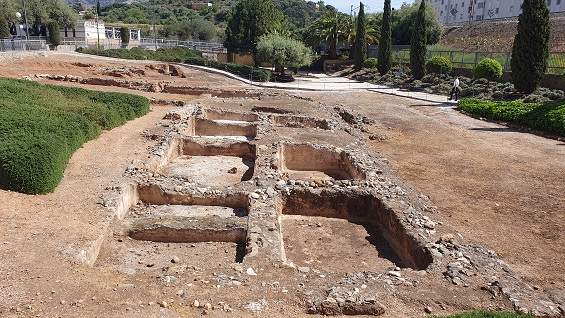
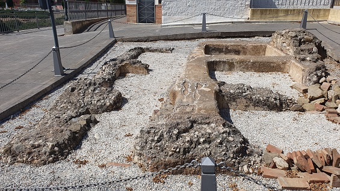
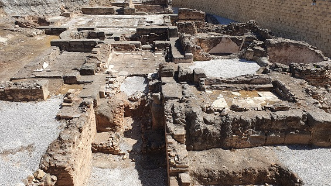
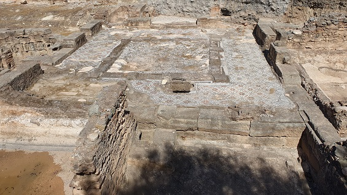

|
FUENGIROLA
Fuengirola fue
fundada por los fenicios, aunque se cree que anteriormente fue un
asentamiento bástulo.
En los textos de Hecateo, en el 500 a.e.c., se hace mención a Syalis, lo
que hace pensar que posiblemente podría haber sido una de las colonias
púnicas de la costa malagueña. De este mismo nombre también hablan Mela,
Ptolomeo o Plinio, que la sitúan entre Malaca y Sálduba como un poblado
fortificado.
A partir del siglo III a.e.c y tras la segunda guerra púnica, Syalis,
pasa a ser dominio romano.
Durante la presencia romana Syalis pasa a denominarse Suel. De época
romana son las termas de Torreblanca del siglo II-III, el yacimiento de
la Finca del Secretario, siglos I-V o los saladeros de pescado que se
encuentran en las faldas del monte del castillo.
El Itinerario de Antonino la ubicaba en el camino de Malaca a Gades.
Yacimiento romano
de la Finca del Secretario.
Villa romana que integra una parte urbana y otra industrial. Data de
mediados del siglo I y pudo perdurar hasta el siglo V. Dispone de un
conjunto termal en buen estado de conservación decorado con motivos
florales en paredes y suelos, cuyas pinturas están expuestas en el Museo
de Málaga. En la zona industrial del yacimiento romano, se halla la
factoría de salazones y unos hornos. Descubierto en 1987, con motivo del
desdoblamiento de la variante de Fuengirola a su paso por la Finca El
Secretario en el margen derecho del arroyo Pajares. En el yacimiento se
han encontrado piezas de incalculable valor histórico, como la Venus de
Fuengirola. En las excavaciones desarrolladas desde 1991 en las termas
han puesto al descubierto un edificio termal de pequeñas dimensiones,
unos 540 metros cuadrados, cuyo estado de conservación lo convierten en
el más completo de los hallados en la provincia de Málaga hasta el
momento. El acceso a los baños debió de ubicarse en la zona nordeste del
edificio, la peor conocida al hallarse parcialmente bajo la carretera.
En Centro de Interpretación están expuestos a los visitantes los
hallazgos de las excavaciones y la Venus.
|
 |
 |
| |
|
|
 |
 |
Más info:
https://www.fuengirola.es
|